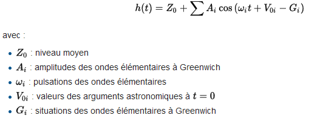

La prise de ris est une manoeuvre de sécurité indispensable et qui doit pouvoir être fait rapidement et dans le calme…Mais il faut bien annoncer haut et fort ce que l’on a fait pour que l’équipage se synchronize.
La prise de ris est une manoeuvre de sécurité indispensable et qui doit pouvoir être fait rapidement et dans le calme…Mais il faut bien annoncer haut et fort ce que l’on a fait pour que l’équipage se synchronize.
Prise de ris
Préparation
Barre
Rester de préférence à une allure de près bon plein/petit largue.
Piano
Choquer un peu le hale-bas de bôme
Numéro 1
Mettre sous tension la balancine de bôme.
Exécution
GV
Choquer l’écoute de grand voile pour que la grand voile faseye.
Barre
Garder la GV faseyante et le foc gonflé pendant la manoeuvre.
Piano
Choquer suffisamment la drisse de grand voile.
Numéro 1
Tirer la toile de grand voile vers le bas jusqu’à crocheter le nouveau point d’amure.
Piano + Numéro 1
Etarquer fortement de nouveau la drisse de grand voile.
Numéro 1 ou Piano
Reprendre et étarquer la bosse de ris à la main ou avec le winch.
Numéro 1
Relâcher un peu la balancine.
Piano
Reprendre du hâle-bas de bôme.
GV
Border de nouveau la grand voile.
Rangement
Numéro 1 ou Piano
Reprendre le mou des autres bosses de ris en attente.
Equipage
Si la voile est gênante, nouer les garcettes.
Barre + Ecoutes
Reprendre le cap désiré.
Equipage
Mettez de l’ordre sur le pont. (drisse, écoutes, bosses de ris, balancine, …)
Lâcher de ris
Le lâcher de ris est similaire à la prise de ris, si ce n’est qu’il faut hisser la grand voile au lieu de l’affaler, voici les détails de l’opération:
Préparation
Barre
Rester de préférence à une allure de près bon plein/petit largue.
Piano
Choquer un peu le hale-bas de bôme.
Numéro 1
Metter sous tension la balancine de bôme.
Exécution
GV
Choquer l’écoute de grand voile pour que la grand voile faseye.
Barre
Garder la GV faseyante et le foc gonflé pendant la manoeuvre.
Piano
Choquer suffisamment la drisse de grand voile pour libérer l’anneau.
Piano ou Numéro 1
Bien choquer en grand toutes les bosses de ris
Numéro 1
Passer l’anneau suivant au croc (si ce n’est pas le ris 1 qui est enlevé)
Piano + Numéro 1
Etarquer fortement de nouveau la drisse de grand voile.
Numéro 1 ou Piano
Reprendre et étarquer la bosse de ris à la main ou avec le winch (si ce n’est pas le ris 1 qui est enlevé)
Numéro 1
Relâcher un peu la balancine.
Piano
Reprendre du hâle-bas de bôme.
GV
Border de nouveau la grand voile.
Rangement
Numéro 1 ou Piano
Reprendre le mou des autres bosses de ris en attente.
Equipage
Si la voile est gênante, nouer les garcettes.
Barre + Ecoutes
Reprendre le cap désiré.
Equipage
Mettez de l’ordre sur le pont. (drisse, écoutes, bosses de ris, balancine, …)
La méthode quick stop, officiellement recommandée par l’ISAF, la Fédération Internationale de la Voile pour récupérer un homme à la mer est une méthode que tous les équipiers doivent connaître. Elle permet d’utiliser le moteur tout en gardant l’appui des voiles.
La méthode quick stop, officiellement recommandée par l’ISAF, la Fédération Internationale de la Voile pour récupérer un homme à la mer est une méthode que tous les équipiers doivent connaître. Elle permet d’utiliser le moteur tout en gardant l’appui des voiles.
Préparation
Témoin
Un HLM!
Témoin
Pointe l’HLM durant tout le reste de la manoeuvre
Equipage
S’attache
Barre
Met le navire dans l’axe du vent
GV
Borde dans l’axe
Equipier
Allume le moteur (bouts, refroidissement, débrayé, …)
Exécution
Barre
Vire foc à contre avec l’aide du moteur si nécessaire
Barre
Route au travers pendant 2 à 3 longueur de bateau
Barre
Passe au vent arrière et affine la trajectoire pour passer à 2 à 3 longueurs de l’HLM
Piano
Le foc est enroulé ou affalé
Barre
Empanne
GV
Choque en grand
Barre
Lofe vers l’HLM pour se retrouver au Bon plein
Barre
Vise le cercle de sécurité de l’HLM (2 à 3m)
Barre
Arrête le navire au niveau du cercle de sécurité
Equipier
Au hauban, lance une ligne munie d’un mousqueton vers l’HLM
Cette manoeuvre est importante, peut servir à récupérer casquettes, lunettes, et tout ce qui flotte, mais elle peut aussi permettre de prendre un coffre.
De plus elle est un très bon exercice pour avoir des bons repères sur le plan d’eau et une bonne compréhension globale de la marche de son bateau.
Cette manoeuvre est importante, peut servir à récupérer casquettes, lunettes, et tout ce qui flotte, mais elle peut aussi permettre de prendre un coffre.
De plus elle est un très bon exercice pour avoir des bons repères sur le plan d’eau et une bonne compréhension globale de la marche de son bateau.
Encore une fois, la communication est essentielle, c’est le barreur (ou chef de bord) qui donne le rythme.
Préparation
Cette manoeuvre ne se prépare pas, c’est aussi pour ça qu’il est important que le bateau soit toujours près à manoeuvrer!
Dès que l’objet tombe/est repéré, un pointeur le montre en permanence au barreur (idéalement dans la descente, peu faire piano et/ou récuparateur par la suite)
Exécution
Equipage
“Un(e) xxx à la mer”
Piano
Prépare la drisse de foc pour pouvoir l’affaler vite
Barre
“J’abats jusqu’au GL!”
GV+Foc
Choque les voiles
Quelques longueurs (3 à 6) de bateau après être passé sous le vent de l’objet
Barre
“Je lofe”
GV+Foc
Borde les voiles
Barre
“On vire”
Foc
Passe le foc
Barre
Pointe l’objet pour passer légèrement au vent, vérifie qu’on avance en pointant
Barre
Fait choquer la GV en grand pour vérifier qu’on peut s’arrêter*
Barre
Fait affaler le foc
Piano
Affale le foc
Barre
Fait réguler la vitesse avec la GV pour arriver à l’arrêt sur l’objet (idéalement au vent pour que le bateau reste “scotché” dessus)
* Si la GV porte, abattre en grand et repartir GL pendant 1 ou 2s et repointer
Attention : Le barreur ne doit en aucun cas empanner pendant ce moment de tension pour ne pas risquer le sur accident.
Attention : C’est aussi vrai une fois que le bateau est quasi arrêté à côté de l’objet, le seul soucis du barreur à ce moment doit être de maintenir la GV faseyante
Rangement
Le bateau est arrêté, la GV faseye, il faut repartir sous GV seule rapidement, tout ranger, hisser le foc…
Le virement de bord réussi permet de passer d’une amure à l’autre tout en gagnant au vent. Il permet, bien maîtrisé, de remonter efficacement au vent en toute situation.
Il s’agit ici de la première approche, ce virement simplifié ne conviendra pas par grosse houle ou mer formée.
Comme dans toute manoeuvre, la communication est primordiale!
Le virement de bord réussi permet de passer d’une amure à l’autre tout en gagnant au vent. Il permet, bien maîtrisé, de remonter efficacement au vent en toute situation.
Il s’agit ici de la première approche, ce virement simplifié ne conviendra pas par grosse houle ou mer formée.
Comme dans toute manoeuvre, la communication est primordiale!
Virement de bord
Préparation
Barre
“Parés à virer?”
Foc
Vérifier que l’ecoute bien lovée et prête à filer
Foc
Vérifier que la contre-écoute reprise légèrement et tournée dans le bon sens autour du winchEquipage
Exécution
Barre
Pousse la barre en grand
Foc
Quand le foc dévente, le choquer en grand
Foc
Quand le foc est dans l’axe du bateau, le border jusqu’aux haubans
Barre
Quand le foc est gonflé, mettre la barre droite
Rangement
Tous
Changement de côté (contre gîte ou gîte en fonction du vent)
Foc
Lover l’écoute pour qu’elle soit prête à filer
Foc
Préparer la contre écoute
Remarques
Après le virement, c’est avant le virement! On reprépare toujours le prochain virement
Le barreur peut changer de côté avant ou après le virement, ou pendant si il est à l’aise, mais sans compromettre la manoeuvre
Comment doit on se (dé)placer sur un bateau dans les différentes situations et pourquoi.
L’accent est mis ici sur la sécurité, pas sur les équilibres aéro hydro
Comment doit on se (dé)placer sur un bateau dans les différentes situations et pourquoi.
L’accent est mis ici sur la sécurité, pas sur les équilibres aéro hydro
Règle générale
Identifier le danger prépondérant
Ne pas se retrouver sur le trajet d’un élément du bateau susceptible de bouger rapidement
Garder une main pour soi en déplacement
Ne jamais hésiter à s’attacher, même sans consigne spécifique
Près
Risque principal? GV choquée (volontairement ou non)
Trajet au vent (partie haute du bateau, en plus c’est plus simple)
Portant
Risque principal? Empannage sauvage
Trajet sous le vent (se glisser sous la bôme, pas facile)
Il s’agit ici d’une introduction aux équilibres hydro/aéro qui font que le bateau avance, gîte, ne se retourne pas,…
Equilibre aéro/hydro
Pourquoi le mouvement se conserve ?
— SCHEMA —
Vue du dessus avec:
Cap compas du navire
Route surface
Force aéro décomposée en composante de dérive et composante propulsive
Force hydro décomposée en composante de trainée et composante anti dérive
Pourquoi le mouvement démarre?
Que se passe-t-il quand le vent augmente? => Accélération
Equilibre latéral
Equilibre stable
Définition d’un équilibre stable: démo avec 2 personnes qui forcent sur un balai (en écartement c’est stable, en compression, instable)
— SCHEMA —
Bateau à l’arrêt
Introduire centre de carène
Poussée d’Archimède au centre de carène
Introduction du centre de gravité
Poids au cdg
Centre de gravité plus bas que le centre de carène => équilibre stable
Modification de l’équilibre avec la gîte
force vélique perpendiculaire à la voile
force anti-dérive perpendiculaire à la dérive
=> Couple de gîte / chavirage
Archimède et le poids forment le couple de redressement
Autre conséquence, la trainée hydro se décale d’un côté tandis que la composante propulsive se décale de l’autre => Couple de lofe
Pour compenser, redresser le bateau en bougeant le CdG
Cas de gîte extrême
Le bateau perd de la vitesse et de la traînée, le couple de redressement devient plus fort que le couple de gîtes, retour au départ
Le roulis sous spi
Le bateau se décale d’un côté et de l’autre, par gravité, le spi se décale du même côté, créant un couple de lofe ou d’abattée
Equilibe longitudinal
— SCHEMA —
Notamment sous spi, la force propulsive (=force aéro dans ce cas) est en haut et vers l’avant du bateau tandis que la trainée est toujours au milieu du bateau vers la quille. On crée un couple d’enfournement
Le couple anti-enfournement est crée par la différence entre le CdG et le centre de carène. Pour l’augmenter il faut reculer le CdG du bateau et le passer le plus à l’arrière possible.
Les marées sont présentes partout, en Manche, en Méditérannée, et même dans mon café!
Petites explications sur le phénomène et brêve prise en main du calcul de marée.
Les marées sont présentes partout, en Manche, en Méditérannée, et même dans mon café!
Petites explications sur le phénomène et brêve prise en main du calcul de marée.
Description du phénomène
Marées
Coefficient
Origine du phénomène
Lune - Cycle des heures
Soleil - Cycle des coefficients
Sizygie : Dans l’axe
Quadrature : Triangle rectangle
Terre : Rotation (Coryolis)
Géographie locale - Tous les endroits ne sont pas synchronisés
Sources de données
SHOM - seule source officielle
Service Hydrographique et Océanographique de la Marine
Le SHOM utilise la formule harmonique depuis 1991 en remplacement de la formule de Laplace:

L’information du SHOM est reprise à plusieurs endroits, mais attention aux apps de téléphones!
La pression atmosphérique est la pression exercée par une colonne d’air au niveau de la mer par une température de 15°C. La pression normale est d’environ 1013,25hPa, arrondie à 1015hPa dans le monde anglo-saxon.
La pression dépend de la température de l’air ainsi que son humidité (pour un volume donné, celui de notre colonne d’air).
Plus l’air est chaud, plus il peut contenir de l’eau (ex: Chaleur tropicale et froid polaire)
Quand l’air se refroidit la vapeur condense et forme des gouttelettes d’eau liquide : on dit que le seuil de la saturation augmente avec la température. (*ex rosée, condensation dans la salle de bain en hiver)
L’humidité relative d’une masse d’air varie donc avec la température de l’air. Lorsque la température augmente, en journée, l’humidité relative diminue, alors que le contenu en eau de la masse d’air - l’humidité absolue - reste inchangé.
De même la pression dépend de la température:
PV=nRT
P: Pression
V: Volume
n: Quantité d’air (moles)
R: Constante d’Avogadro ou Constante universelle des gaz parfaits
Du coup, à volume constant (notre colonne d’air), et pour la même quantité d’air, la pression dépend de la température. Plus il fait chaud, plus la pression augmente.
Anticyclone
Un anticyclone est une masse d’air froid et sec qui descend de la troposphère et qui agit comme un “compresseur”.
Un anticyclone tourne en sens horaire et les vents s’en écartent.
Dépression
Une dépression est une masse d’air chaude et humide en surface terrestre, qui du coup va monter (moins dense/moins lourd que l’air froid du dessus) et se refroidir => Condensation. C’est une sorte d’aspirateur à air.
Une dépression tourne en sens anti-horaire et les vents rentrent.
Création du vent géostrophique
Le vent géostrophique est le vent qui se crée dans l’atmosphère sans prendre en compte les frottements dûs au sol et à la géographie. Il est celui que l’on peut prédire en regardant juste les cartes des anticyclones et dépressions
Effets de site
Thermique
Durant le jour, près des côtes d’un lac ou de la mer, le soleil réchauffe plus rapidement le sol que l’eau. L’air prend donc plus d’expansion sur terre et s’élève créant une pression plus basse que sur le plan d’eau. Une fois encore cette différence de pression se crée sur une distance très faible et ne peut être contrebalancée par les forces de Coriolis. Une brise de mer (lac) s’établit donc. La même chose se produit la nuit mais en direction inverse, la brise de terre
Venturi
Le vent est dirigé par les obstacles, il suivra une vallée, il longera une côte en falaises,…De plus, il se renforcera, en quelque sorte, il y a moins de place pour faire passer l’air, il faut donc le faire passer plus vite.
Les dangers
Orages
Un orage (dérivé à l’aide du suffixe age de l’ancien français ore, signifiant “vent”) est une perturbation atmosphérique d’origine convective (mouvements verticaux dans un fluide) associée à un type de nuage particulier : le cumulonimbus. Ce dernier est à forte extension verticale, il engendre des pluies fortes à diluviennes, des décharges électriques de foudre accompagnées de tonnerre. Dans des cas extrêmes, l’orage peut produire des chutes de grêle, des vents très violents et, rarement, des tornades.
Variations barométriques
Plus la variation de pression se fait vite, et plus le vent qui cherchera à équilibrer ce déséquilibre de pression sera violent, on surveille toujours et on note toutes les heures la valeur de la pression mesurée par le baromètre de bord.
Le grain
Sous un grain les vents sont plus violents (25% à 50%) et changent de direction.
Le grain à pluie ‘rejette’ de l’air par son centre tandis que le grain sec l’aspire
–SCHEMA–
Si on ne peut l’éviter, il vaut mieux prévoir, s’habiller et diminuer la toile.
Lecture des nuages
Le niveau d’altitude des nuages est un phénomène lié à la pression atmosphérique. Plus les nuages sont bas, plus la pression est basse. Si les nuages descendent, le temps va se dégrader, si les nuages montent, il va s’améliorer.
Si les nuages descendent ou montent très vite, il y a une grosse variation barométrique, signe de danger potentiel.
Quelques informations basiques mais essentielles à savoir avant de partir en mer…
Notions générales
RIPAM
Le “code de la route de la mer” est défini par le RIPAM (Règlement International pour Prévenir des Abordages en Mer)
Privilèges
Il ne contient pas de priorités mais des privilèges, il est interdit d’être idiot, on doit tous tout faire pour éviter les abordages
En dernier recours le navire dit « privilégié » a le devoir d’éviter la collision par tous les moyens qui lui sont possibles, si le navire « non privilégié » n’applique pas les règles
Règles applicables à tous
Veille permanente
Vitesse adaptée
Evaluation du risque d’abordage
Identification de jour pour nos bateaux
Moteur: cone pointe en bas
Boule: Mouillage
Règles dîtes “de barre” simplifiées
Entre voiliers et autres usagers
Les voiliers de plaisance navigant à la voile sont privilégiés par rapport aux plaisanciers à moteur
Un voilier navigant au moteur est considéré comme un bateau moteur
Un voilier navigant au moteur et à la voile est considéré comme un bateau moteur
Les bateaux “travaillant” sont privilégiés par rapport à un voilier (pêcheurs, cargo, ferry, …)
Un bateau au mouillage/échoué/à l’arrêt est privilégié sur un voilier en mouvement
Un bateau rattrapé quel qu’il soit est privilégié sur le bateau rattrapant
Entre voiliers
Le voilier qui est tribord amure (recevant donc le vent par le tribord) est privilégié sur le voilier babord amure. (La GV est déterminante en cas de VA)
Le voilier sous le vent est privilégié sur le voilier au vent (celui qui remonte le plus au vent est privilégié. Logique par rapport à la position du barreur)
Conclusion
En dernier recours le navire dit « privilégié » a le devoir d’éviter la collision par tous les moyens qui lui sont possibles, si le navire « non privilégié » n’applique pas les règles
Différences entre réglages et ajustages ainsi que les premières pistes pour optimiser ses voiles…On parlera ici du cas de la navigation en finesse.
Il est également important de faire les réglages et les ajustages avec le même objectif (puissance ou cap ou compromis, mais pas certains ajustages en puissance et d’autres en cap), de garder une cohérence
Différences entre réglages et ajustages ainsi que les premières pistes pour optimiser ses voiles…On parlera ici du cas de la navigation en finesse.
Il est également important de faire les réglages et les ajustages avec le même objectif (puissance ou cap ou compromis, mais pas certains ajustages en puissance et d’autres en cap), de garder une cohérence
Introduction
Avant le réglages
L’eau est ~800 fois plus dense que l’air, son impact sur la marche du bateau est très important. En premier lieu, il est bon de vérifier:
Le carénage (avant de partir)
L’équilibre (matossage, équipiers) latéral et longitudinal
Différences entre réglage et ajustage
Réglage
Le réglage d’une voile, plus précisément d’un plan de voilure, se fait en ouvrant ou fermant ce plan par rapport au vent apparent.
Ajustage
L’ajustage est l’ensemble des actions sur la forme de la voile, et non la position de la voile. En gros il s’agit d’agir sur la position et la taille du creux de la voile, ainsi que sur le vrillage de la voile.
La prise de ris est considéré comme un ajustage.
Réglages
On considère un angle d’incidence entre le vent et la voile de 10° à 20° comme étant le bon réglage pour un écoulement laminaire.
—SCHEMA—
En dessous: Trop bordé, écoulements perturbés, dérive
Au dessus: Voile faseye
On règle les voiles de l’avant vers l’arrière:
Foc: Essentiellement force propulsive
GV: Essentiellement gouvernail et équilibre
On recherche en permanence la limite de faseyement et l’on surveille les penons!
Ajustages
Ecoulement laminaire
Le creux
Taille
Le creux idéal est de l’ordre de 14% de la longueur de la corde (~de la bôme)
Plus le creux est grand, plus il génère de la puissance mais aussi de la trainée, et plus l’angle d’incidence de la voile avec le vent s’ouvre, empêchant de remonter plus au vent. Inversement, une voile moins creusée donnera moins de puissance mais permettra de remonter plus au vent.
– SCHEMA –
La taille du creux se régle essentiellement :
GV : Bosse d’empointure
Foc : Position du chariot
Position
La position du creux considérée comme idéale est vers le 1⁄3 avant de la voile (profil d’une aile d’avion). La position du creux jouera sur la stabilité du bateau (a-t-il tendance à lofer ou à abattre?) en changeant le point d’application de la force vélique.
La position du creux se régle essentiellement :
GV : Cuningham / drisse
Foc : Drisse / pataras
Le vrillage
Le vrillage est la forme de la voile vue par en bas. Si l’angle d’incidence est constant, la situation est idéale et la voile n’a pas de vrillage. Les penons se comportent alors tous de la même façon sur la hauteur de la voile.
Il est parfois utile de chercher le vrillage pour diminuer la puissance quand le bateau a trop de gîte et que l’on ne veut ou ne peut pas prendre un ris.
Le vrillage se règle essentiellement :
GV : Ecoute + chariot, hale-bas
Foc : Ecoute + chariot.
Ecoulements perturbés
Dans ce cas, on cherche la traînée et non plus la portance, il faut creuser la voile, minimiser le vrillage.
Sur la GV: choquer le cunnigham, la bordure et border le hale-bas (réduction du vrillage)
Sur le foc: On avance le chariot, mais dans ce cas la voile se creuse trop au point de se replier sur elle-même. Résultat: ce n’est pas la voile adaptée…
Types de réglages/ajustages
Puissance
Utile pour passer la vague ou par petit temps, le réglage sert aussi à la relance quand on a perdu de la vitesse.
Il faut creuser les voiles et reculer légèrement le creux.
Finesse / Cap
Une fois le bateau lancé, le réglage de finesse permettra de gagner plus au vent en améliorant le confort à bord…a condition de garder suffisament de puissance pour passer le clapot.
Lors d’un stage à terre, la sécurité est maximum, mais pour bien en profiter, il est important de connaître quelques règles de base…
Périmètre de sécurité
Zone sans danger “fixe” (ou bien connus)
Zone visible du quart
Eviter les problèmes
Rester dans le périmètre de sécurité
Présentation des alignements et dangers potentiels de la zone.
Si un doute sur le dépassement, ne pas hésiter à prévenir le moniteur
Faire attention aux autres navires
Beaucoup d’autres pratiquants, avec les contraintes liées à leur support (le planchiste n’a pas les yeux dans le dos)
–> Veille 360° en permanence, en cas de doute, demander au moniteur
Si un problème arrive…
C’est au moniteur de le régler, si le moniteur ne peut pas le faire (malaise, HLM, …), il faut:
Arrêter le bateau en restant en sécurité
Cape
Face au vent
Mouillage
Action immédiate pour améliorer la situation (?)
En cas d’HLM, peut on lui lancer un bout ou la bouée pour avoir un contact physique?
Se signaler rapidement en direction du quart et des autres pratiquants
 Teebo
Teebo


 Prendre un haut fond comme obstacle ou une zone interdite mal marquée
Prendre un haut fond comme obstacle ou une zone interdite mal marquée Prendre un obstacle bien visible
Prendre un obstacle bien visible